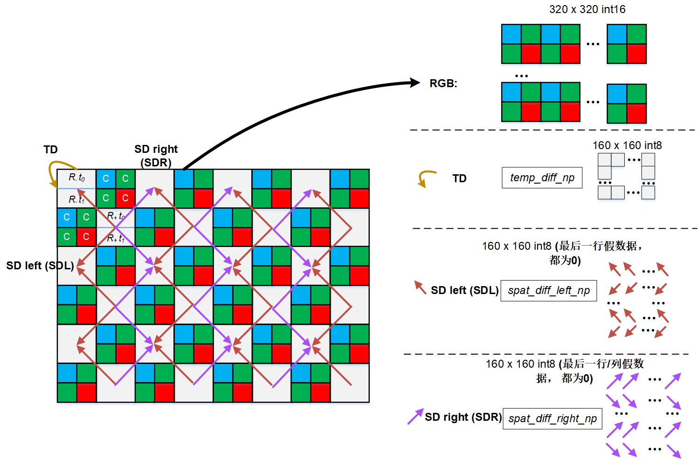

TianMouCV算法库
这里是代码库的简要介绍和概述。
目前doc基于Tianmoucv-0.3.2版本，已开源 开发版本为0.3.5.4，待开源
README
如果你用的是preview版本，下面的tianmouc都替换成Tianmoucv_preview
Unix系统安装
step 1. 安装基本的编译工具
sudo apt-get update
sudo apt-get install make
sudo apt-get install cmake
sudo apt install build-essential
注:macOS使用brew安装gcc/g++，install默认使用g++
brew install make
brew install cmake
brea install g++,gcc
step 2. 安装python和pytorch，尽量使用cuda版本与anaconda
conda create -n tianmoucv --python=3.10
conda activate tianmoucv
conda install pytorch torchvision torchaudio pytorch-cuda=12.0 -c pytorch -c nvidia
step 3. 执行自动安装脚本
pip install tianmoucv -i https://pypi.tuna.tsinghua.edu.cn/simple
或者从源码安装(某些特殊情况下.so文件无法自动编译时可使用)
git clone https://github.com/Tianmouc/tianmoucv_preview.git
cd tianmoucv_preview
sh install.sh
Windows系统安装
step 1. 安装基本的编译工具
安装minGW,make,cmake，git 前往对应官网下载
minGW是一个windows上的gnu最小系统，建议直接下载最新版本的预编译压缩包,以支持最新的c++协议
https://github.com/niXman/mingw-builds-binaries/releases
将解压后的文件中的bin文件夹路径添加到系统环境变量中的PATH内，保证命令行可以直接调用g++
（optional）如果你需要使用sdk，那么你还需要进一步安装opencv和cyusb，然后安装cmake
step 2. 安装python和pytorch，尽量使用cuda版本与anaconda
conda create -n tianmoucv --python=3.10
conda activate tianmoucv
conda install pytorch torchvision torchaudio pytorch-cuda=12.0 -c pytorch -c nvidia
step 3. 执行自动安装脚本
git clone git@github.com:Tianmouc/tianmoucv.git
cd tianmoucv
./install.bat
数据解码说明
{kind=link}
解码数据在tianmoucv.data的self.prepocess输入之前完成
说明文档索引
Tianmocu原始数据读取(data reader)
USB data 读取
PICE data 读取
ISP处理方法
- tianmoucv.isp.isp_basic.default_rgb_isp(raw, blc=0, gamma=0.9, raw_input=True)[源代码]
默认的RGB RAW数据处理流程
空洞填补
去马赛克
白平衡
自适应降噪
自动饱和度
自动曲线
自动归一化
注意: 速度非常慢，仅供参考
- tianmoucv.isp.isp_basic.ACESToneMapping(color, adapted_lum=1)[源代码]
- tianmoucv.isp.isp_basic.Scurve(Y, curve_factor)[源代码]
曲线调整 :param img: cv2.imread读取的图片数据 :curve_factor: 增加对比度，值越大对比度越大 :return: 返回的白平衡结果图片数据
- tianmoucv.isp.isp_basic.adjust_curve(image, curve_factor=0.02)[源代码]
曲线调整
- tianmoucv.isp.isp_basic.adjust_saturation(image, saturation_factor=(128, 256))[源代码]
饱和度调整
- 参数:
img – cv2.imread读取的图片数据
- Saturation_factor:
增加饱和度，saturation_factor越大饱和度越大
- 返回:
返回的饱和度结果图片数据
- tianmoucv.isp.isp_basic.lyncam_raw_comp(raw)[源代码]
Tianmouc Bayer 填充
Author: Taoyi Wang
- tianmoucv.isp.isp_basic.exp_bayer_to_rgb_conv(bayer_image)[源代码]
# Define convolution kernels for each color channel # These kernels are designed to average the surrounding pixels # Kernel for Red and Blue channels (they are at the corners of the Bayer pattern) lyh testing
- tianmoucv.isp.isp_basic.demosaicing_npy(bayer=None, bayer_pattern='bggr', level=0, bitdepth=8)[源代码]
Call this function to load raw bayer image :param bayer: input bayer image :param level: demosaicing level. 0: bilinear linear; 1: gradient :param bayer_type: bayer_type: : 0–RGrRGr…GbBGbB, 1–GrRGrR…BGbBGb… Author: Taoyi Wang
- tianmoucv.isp.transform.SD2XY(sd_raw: tensor) tensor[源代码]
input: [h,w,2]/[2,h,w]/[n,2,h,w] output: [h,2*w],[h,2*w] or [n,h,2*w],[n,h,2*w] 坐标变换规则参照http://www.tianmouc.cn:40000/tianmoucv/introduction.html
- tianmoucv.isp.transform.compute_minimum_convex_hull(matrix)[源代码]
计算最小凸包
- tianmoucv.isp.transform.calculate_area(vertices)[源代码]
# 计算多边形的面积
- tianmoucv.isp.transform.is_inside(vertices, point)[源代码]
# 判断点是否在多边形内部
- tianmoucv.isp.transform.interpolate_zero_point(matrix, vertices, zero_point)[源代码]
# 找到零点周围的非零点，进行插值
Tianmocu python相机接口(仅支持usb)
算法库(proc)
特征库(features)
- tianmoucv.proc.features.diff.gaussain_kernel(size=5, sigma=2)[源代码]
generate Gaussain blur kernel
- parameter:
- param size:
特征的数量，int
- param sigma:
高斯标准差，int
- tianmoucv.proc.features.diff.gaussian_smooth(inputTensor: Tensor, kernel: Tensor) Tensor[源代码]
用现有高斯核做高斯模糊
- parameter:
- param inputTensor:
待处理矩阵,torch.Tensor
- param kernel:
高斯模糊核,torch.Tensor
- return:
处理后同尺寸模糊图,torch.Tensor
- tianmoucv.proc.features.diff.HarrisCorner(Ix: Tensor, Iy: Tensor, k=0.1, th=0.5, size=5, sigma=1, nmsSize=11)[源代码]
Harris 角点检测
\[R=det(H)−ktrace(H)\]\[\lambda1 + \lambda2 = \sum I_x^2 * \sum I_y^2 - \sum I_{xy} ^ 2\]\[\lambda1 * \lambda2 = \sum I_{xy} ^ 2\]\[R = det H - k trace H ^2= \lambda_1*\lambda_2 - k(\lambda_1 + \lambda_2)^ 2\]\[= (\sum I_{X^2} * \sum I_{y^2} - \sum I_{xy} ^ 2) - k (\sum I_x^2 + \sum I_y^2)^2\]- parameter:
- param Ix:
x方向梯度,[h,w],torch.Tensor
- param Iy:
y方向梯度,[h,w],torch.Tensor
- param size:
高斯核尺寸,int
- param th:
控制阈值,范围是0-1,对梯度来说应该设小一点,float
- param nmsSize:
最大值筛选的范围
- param k:
是一个经验参数,0-1,float
- tianmoucv.proc.features.diff.TomasiCorner(Ix: Tensor, Iy: Tensor, index=1000, size=5, sigma=2, nmsSize=11)[源代码]
Shi-Tomasi 角点检测 在Harris角点检测的基础上，Shi和Tomasi 在1993的一篇论文《Good Features to track》中提出了基于Harris角点检测的Shi-Tomasi方法。 经验参数需求更少，更快，但效果变差
- parameter:
- param Ix:
x方向梯度,[h,w],torch.Tensor
- param Iy:
y方向梯度,[h,w],torch.Tensor
- param size:
高斯核尺寸,int
- param index:
前N个点,int
- param nmsSize:
最大值筛选的范围
- tianmoucv.proc.features.diff.HarrisCorner3(Ix: Tensor, Iy: Tensor, It: Tensor, k=0.5, th=0.95, size=5, sigma=2)[源代码]
Harris3D角点，用Ix和Iy做计算，可以用SD的两个方向
如果小正方体沿z方向移动，那小正方体里的点云数量应该不变 如果小正方体位于边缘上，则沿边缘移动，点云数量几乎不变，沿垂直边缘方向移动，点云数量改 如果小正方体位于角点上，则有两个方向都会大幅改变点云数量 拓展到3D中则使用法向量(包含法线和方向两个信息)
\[A = Ix * Ix\]\[B = Iy * Iy\]\[C = It * It\]\[D = Ix * Iy\]\[E = Ix * It\]\[F = Iy * It\]\[M= [[A F E];[F B D];[E D C]]\]Harris 角点检测 similar,
\[R=det(M)−ktrace(M)^2\]
特征库追踪
光流算法库(opticalFlow)
- tianmoucv.proc.opticalflow.estimator.local_norm(Diff: Tensor) Tensor[源代码]
梯度归一化
- parameter:
- param SD:
待归一化项
- tianmoucv.proc.opticalflow.estimator.LK_optical_flow(SD: Tensor, TD: Tensor, win=5, stride=0, mask=None, ifInterploted=False) Tensor[源代码]
LK方法计算稠密光流
\[[dx,dy]*[dI/dx,dI/dy]^T + dI/dt = 0\]- parameter:
- param SD:
原始SD，SD[0,1]: x,y方向上的梯度,[2,h,w],torch.Tensor
- param TD:
原始SD，TD[0]: t方向上的梯度,[1,h,w],torch.Tensor
- param win=5:
取邻域做最小二乘,邻域大小
- param stride=0:
取邻域做最小二乘,计算步长
- param mask=None:
特征点tensor,binary Tensor,[h,w]
- param ifInterploted = False:
计算结果是否与COP等大
- tianmoucv.proc.opticalflow.estimator.HS_optical_flow(SD: Tensor, TD: Tensor, ifInterploted=False, epsilon=1e-08, maxIteration=50, scales=4, labmda=10) Tensor[源代码]
多尺度HS方法计算稠密光流，效果更好 parameter:
- param SD:
原始SD，SD[0,1]: x,y方向上的梯度,[2,h,w],torch.Tensor
- param TD:
原始SD，TD[0]: t方向上的梯度,[1,h,w],torch.Tensor
- param ifInterploted = False:
计算结果是否与COP等大
- param epsilon = 1e-8:
收敛界
- param maxIteration = 50:
最大迭代次数
- param scales = 4:
尺度数量
- param labmda=10:
惩罚因子,越大光流越平滑
- class tianmoucv.proc.opticalflow.spy_net.TianmoucOF_SpyNet(imgsize, ckpt_path=None, _optim=True)[源代码]
基类：
Module计算稠密光流的nn方法 默认权重存储于’of_0918_ver_best.ckpt’ 或初始化时指定ckpt_path
parameter:
- 参数:
imgsize – (w,h),list
ckpt_path – string, path to weight dictionary
- forward_time_range(tsdiff: Tensor, t1, t2, F0=None)[源代码]
- 参数:
@tsdiff – [c,n,w,h], -1~1,torch，decoder的输出直接concate的结果
@t1 –
[0 (t2 in) –
t1-t2 (n] calculate the OF between) –
重建算法库(reconstructor)
- tianmoucv.proc.reconstruct.basic.laplacian_blending_1c(Ix, Iy, gray, iteration=50)[源代码]
# 灰度重建-不直接调用 # vectorized by Y. Lin # Function to apply lap blending to two images
- tianmoucv.proc.reconstruct.basic.laplacian_blending_1c_batch(Ix, Iy, gray=None, iteration=50)[源代码]
# 灰度重建-支持batch的网络训练用接口 # vectorized by Y. Lin # Function to apply Poisson blending to two images
- tianmoucv.proc.reconstruct.basic.genMask(gray, th=24, maxV=255, minV=0)[源代码]
生成过欠曝区域遮罩
- tianmoucv.proc.reconstruct.basic.laplacian_blending(Ix, Iy, srcimg=None, iteration=20, mask_rgb=False, mask_th=24)[源代码]
RGB/灰度 HDR 融合重建
vectorized by Y. Lin Function to apply Poisson blending to two images :Ix,Iy: [h,w]，x和y方向的梯度 :sciimg: [None],[h,w],[h,w,3]，分别进入不同模式
- tianmoucv.proc.reconstruct.basic.batch_inference(model, sample, h=320, w=640, device=device(type='cuda', index=0), ifsingleDirection=False, speedUpRate=1, bs=1)[源代码]
model need to implement “result = forward_batch(F_batch, td_batch,SD0_batch,SD1_batch)”
- tianmoucv.proc.reconstruct.integration.TD_integration(tsdiff, F0, F1, t, TD_BG_NOISE=0, threshGate=0.01568627450980392, dig_scaling=1.5)[源代码]
AOP+COP合成灰度
校正TD的正向和负向差分的不一致性
计算AOP到COP的线性缩放系数
laplacian_blending
双向TD积累+SD灰度合成最终结果
- parameter:
- param F0:
[h,w,3],torch.Tensor
- param F0:
[h,w,3],torch.Tensor
- param tsdiff:
[3,T,h,w],torch.Tensor, 默认decoded结果的堆积
- param TDnoise:
噪声矩阵 [h,w], torch.Tensor
- param threshGate=4/255:
积累时的噪声阈值
- param t:
int
- tianmoucv.proc.reconstruct.integration.SD_integration(SDx: array, SDy: array) array[源代码]
SD直接积分累加重建，简单可视化用 use mapped SDx and SDy to conduct direct integration